Chia sẻ hành trình học tập và những gì tôi hướng tới trong tương lai.
Xây dựng nền tảng vững chắc về AI, khoa học dữ liệu, Machine Learning và Deep Learning. Nâng cao kiến thức toán học, lập trình và thuật toán AI nhằm giải quyết các vấn đề thực tiễn bằng công nghệ.
Trở thành kỹ sư Trí tuệ nhân tạo, chuyên nghiên cứu và phát triển các giải pháp Machine Learning và Deep Learning. Tham gia vào các dự án công nghệ hiện đại, xây dựng các hệ thống thông minh có giá trị thực tiễn.
Trong lĩnh vực AI, tư duy giải quyết vấn đề và hiểu dữ liệu quan trọng hơn việc chỉ áp dụng thuật toán. Kiên trì, tự học và không ngừng cập nhật kiến thức là chìa khóa thích ứng với công nghệ đang thay đổi từng ngày.
Mỗi nhiệm vụ ghi lại một kỹ năng cụ thể cùng minh chứng thực tế.
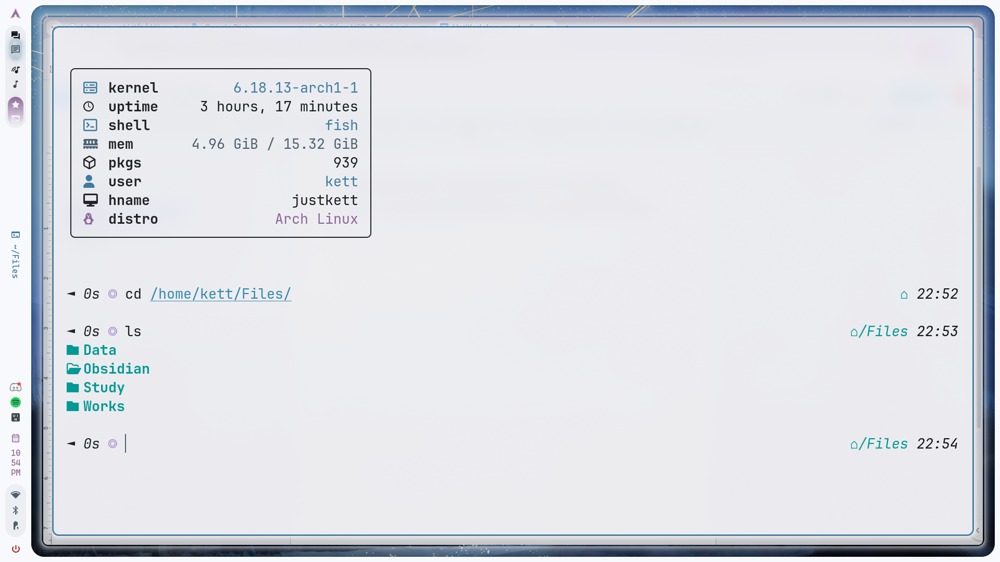
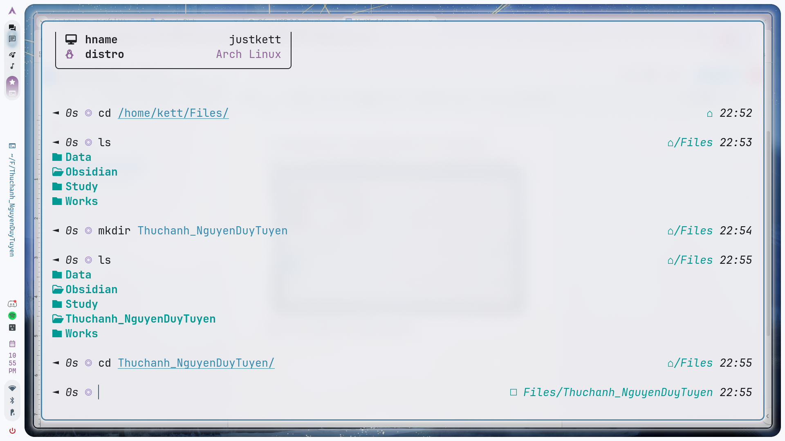
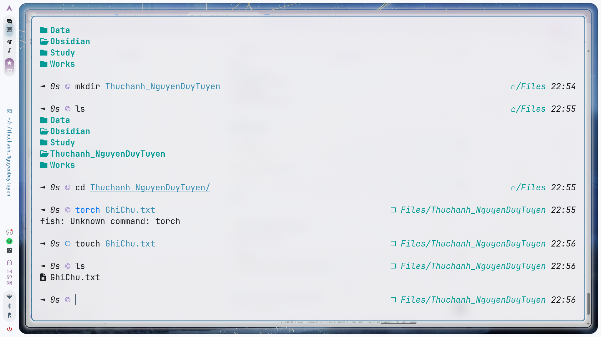
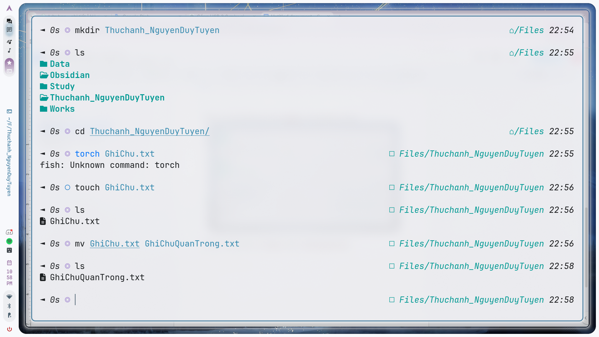
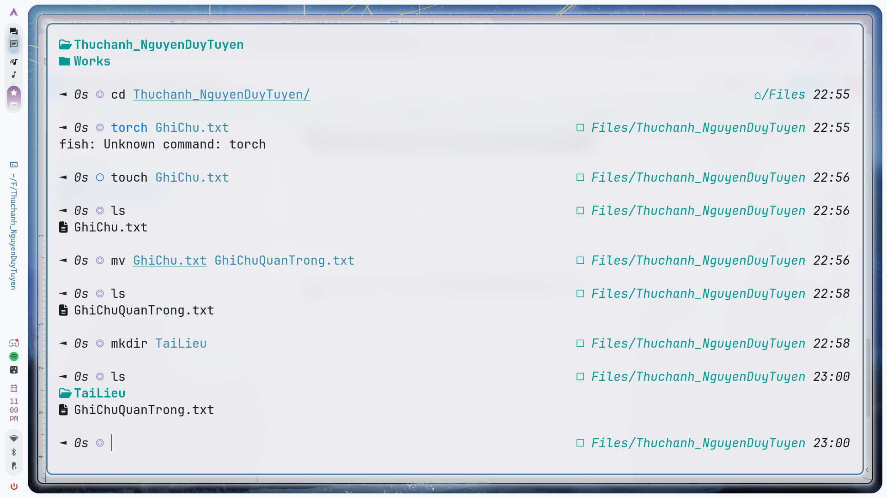
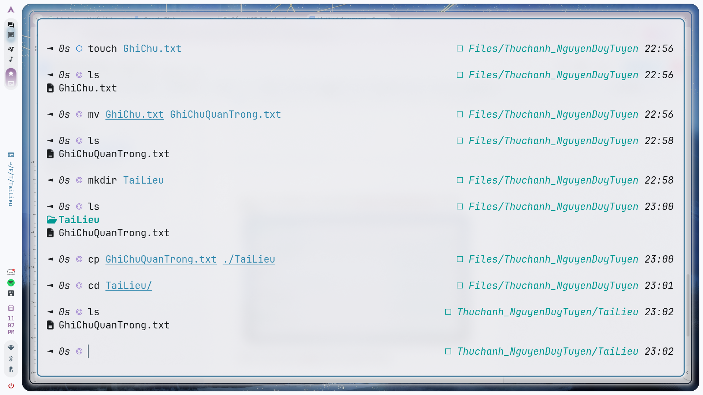
Ứng dụng Trí tuệ nhân tạo trong Giáo dục
Trong bối cảnh toàn cầu đang chuyển đổi số mạnh mẽ, AI đã trở thành công nghệ cốt lõi tác động đến giáo dục. AI hỗ trợ giảng dạy, cá nhân hóa trải nghiệm học tập, và nâng cao đánh giá năng lực học sinh.
Nguồn sử dụng: Google Scholar, IEEE Xplore, SpringerLink, UNESCO, World Bank, OpenAI.
Từ khóa tìm kiếm:
| # | Tài liệu | Phương pháp | Tin cậy |
|---|---|---|---|
| 1 | Holmes (2019) | Nghiên cứu | ⭐⭐⭐⭐ |
| 2 | Russell & Norvig (2021) | Tổng hợp | ⭐⭐⭐⭐⭐ |
| 3 | Luckin (2018) | Nghiên cứu & Phân tích | ⭐⭐⭐⭐ |
| 4 | Baker (2016) | Thực nghiệm | ⭐⭐⭐⭐ |
| 5 | Chen et al. (2020) | Thực nghiệm | ⭐⭐⭐⭐ |
| 6 | UNESCO (2021) | Báo cáo | ⭐⭐⭐⭐ |
| 7 | OpenAI (2023) | Thực hành & phân tích | ⭐⭐⭐⭐ |
| 8 | World Bank (2020) | Báo cáo & Case study | ⭐⭐⭐⭐ |
| 9 | MIT Tech Review (2022) | Báo cáo & Case study | ⭐⭐⭐ |
| 10 | Blog AI | Nghiên cứu & Phân tích | ⭐⭐ |
| Tác vụ | Cơ bản | Cải tiến | Nâng cao |
|---|---|---|---|
| Tóm tắt tài liệu | Ngắn, thiếu chi tiết | Rõ ràng hơn, có cấu trúc | Chất lượng cao, đầy đủ ý |
| Giải thích khái niệm | Ngắn gọn, mơ hồ | Dễ hiểu hơn, còn thuật ngữ chuyên ngành | Rõ ràng, trực quan, có ví dụ |
1. Notion — quản lý nhiệm vụ nhóm
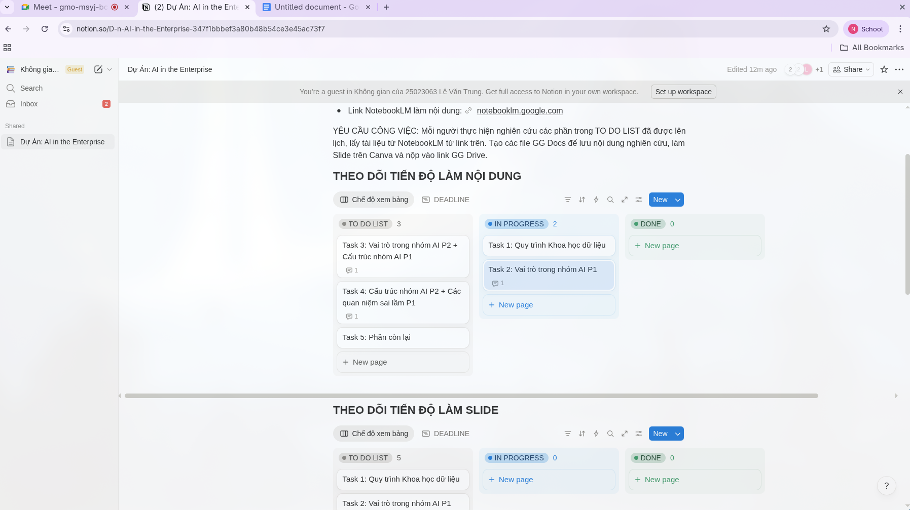
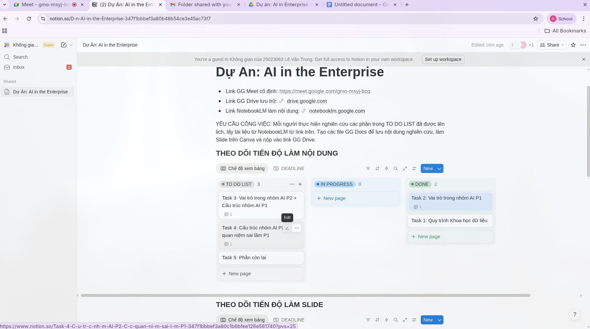
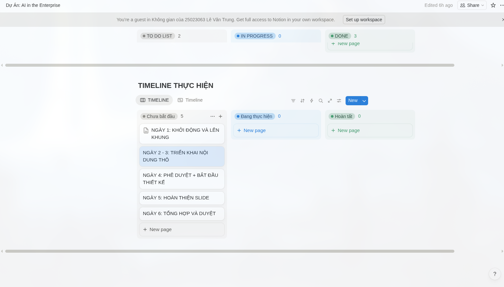
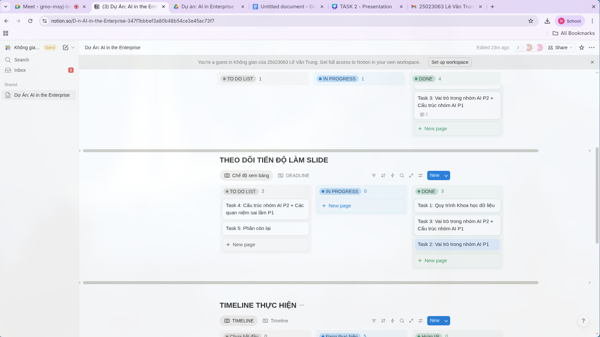
2. Google Drive & Google Docs — làm nhiệm vụ
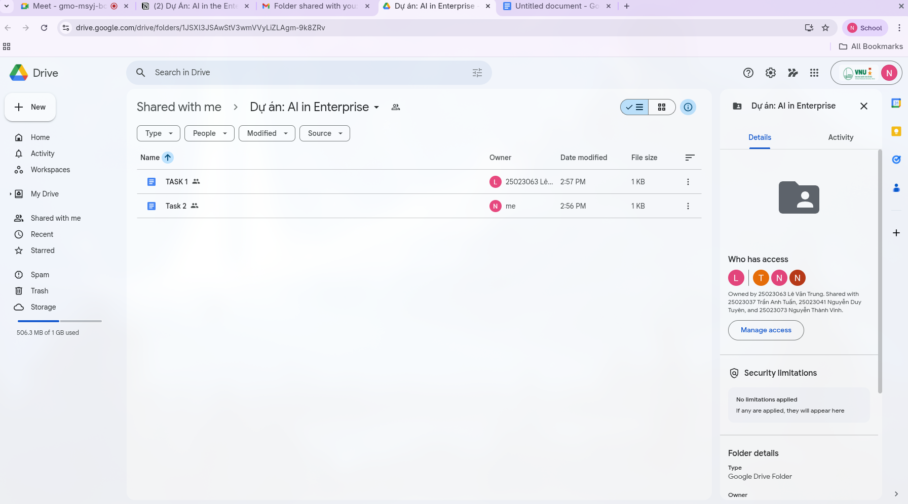
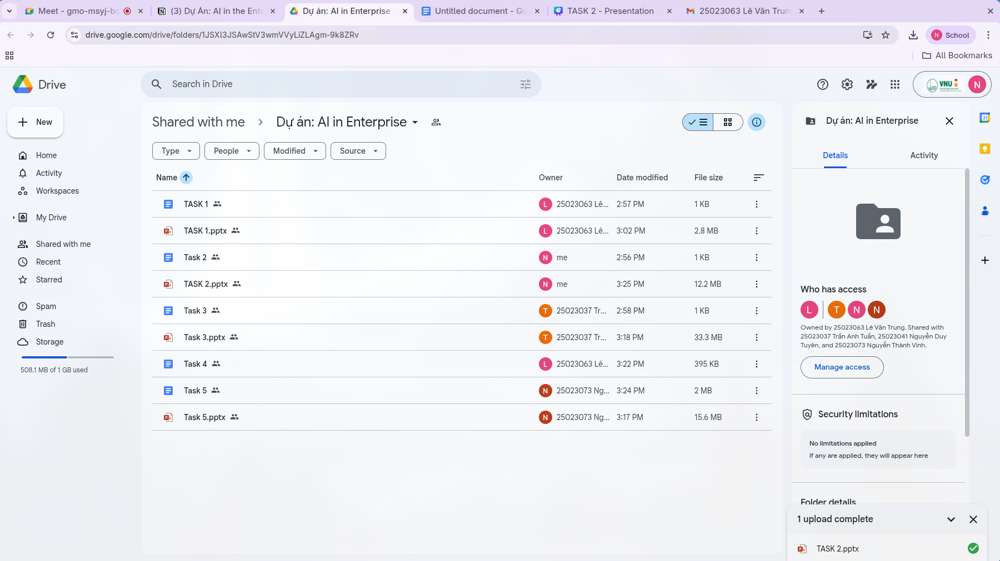
3. Google Meet — thảo luận nhóm
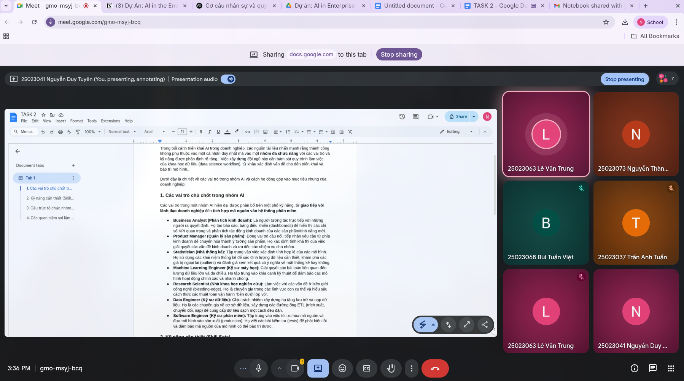
| Công cụ | Nhận xét |
|---|---|
| Notion | Tuyệt vời để lập kế hoạch và phân công nhóm. Khó với người mới, cần thời gian làm quen |
| Google Docs | Dễ sử dụng, phù hợp soạn thảo cơ bản cho sinh viên |
| Google Drive | Lưu trữ và chia sẻ tài liệu hữu ích khi làm việc nhóm |
| Google Meet | Họp online thuận tiện, dễ sử dụng, phù hợp họp nhóm |
ChatGPT – Tạo nội dung văn bản
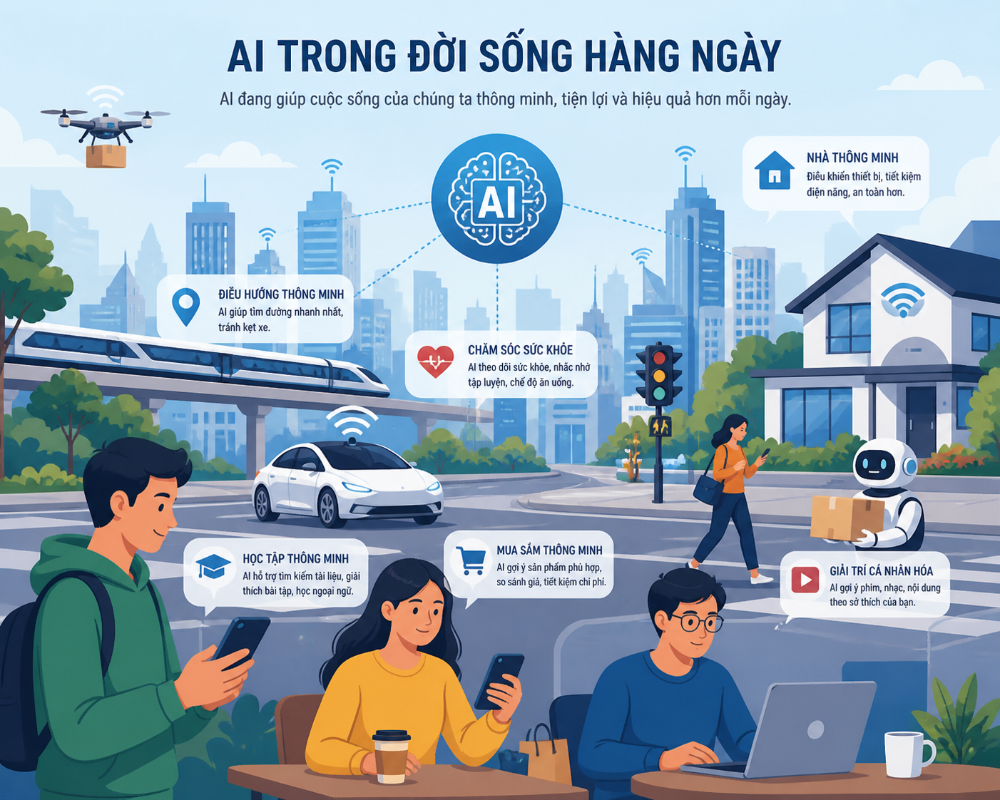
Tại VNU-UET, liêm chính học thuật là giá trị cốt lõi tạo nên uy tín bằng cấp và danh tiếng nhà khoa học. Dù chưa có "Luật AI" riêng, khung pháp lý hiện hành đã bao hàm đầy đủ việc điều chỉnh hành vi sử dụng AI.
| Khía cạnh | Quy định tại VNU-UET | Hệ quả nếu vi phạm |
|---|---|---|
| Tính nguyên bản | Mọi công trình (bài tập, khóa luận) phải là kết quả lao động trí tuệ độc lập. AI làm mờ ranh giới nếu người học không chứng minh được đóng góp cá nhân. | Hủy kết quả bài nộp, kỷ luật học đường |
| Cấm gian lận & đạo văn | Nghiêm cấm sử dụng sản phẩm của thực thể khác để thay thế kết quả làm việc của mình mà không khai báo. Nộp nguyên bản kết quả AI = chiếm đoạt trí tuệ. | Đình chỉ học tập, cảnh cáo |
| Minh bạch công cụ | Sinh viên có quyền dùng công cụ hỗ trợ nhưng có nghĩa vụ công khai phương pháp. Che giấu sự hỗ trợ của AI trong code/báo cáo là vi phạm nghiêm trọng. | Vi phạm quy tắc trung thực học thuật |
📝 Thiết kế Prompt (2 bước chiến lược)
📤 Kết quả đầu ra (Output từ AI)
🔍 Đánh giá & Hiệu chỉnh (Góc nhìn chuyên gia)
* Báo cáo có sự hỗ trợ của ChatGPT-4 (OpenAI) trong việc xây dựng cấu trúc sơ bộ. Tác giả đã thực hiện kiểm chứng độc lập, viết lại 70% nội dung và chịu trách nhiệm hoàn toàn về các nhận định chuyên môn.
| Đặc điểm | ✅ Hỗ trợ hợp lý (Co-creation) | ❌ Gian lận học thuật (Replacement) |
|---|---|---|
| Bản chất hành động | Dùng AI để brainstorming, giải thích mã nguồn phức tạp, gợi ý cấu trúc bài viết | Yêu cầu AI viết toàn bộ code, giải bài tập hoặc viết tiểu luận từ đầu đến cuối |
| Xử lý thông tin | Kiểm chứng dữ liệu, phản biện kết quả AI, hiệu chỉnh theo ngôn ngữ cá nhân | Copy-Paste trực tiếp kết quả AI vào bài nộp |
| Tính minh bạch | Khai báo chi tiết phương pháp sử dụng AI trong phụ lục hoặc trích dẫn | Che giấu, dùng công cụ "paraphrase" để vượt qua phần mềm kiểm tra đạo văn |
Mọi thông tin AI cung cấp (số liệu, mốc thời gian, tên luật) phải kiểm chứng qua ít nhất 2 nguồn chính thống
Luôn đính kèm danh sách prompts chính yếu đã sử dụng như một phần phụ lục bài tập
Tuyệt đối không đưa mã nguồn độc quyền hoặc dữ liệu nghiên cứu chưa công bố lên AI công cộng
Chỉ dùng AI sau khi đã tự xây dựng ít nhất một bản phác thảo ý tưởng hoặc logic giải thuật cá nhân
Không dùng AI mô phỏng phong cách viết hoặc sao chép ý tưởng của giáo sư, nhà khoa học khi chưa có phép
Luôn tự hỏi: "Nếu AI sai, mình có đủ kiến thức để nhận ra và sửa chữa không?" — Bạn ký tên, không phải AI
Khi dùng AI hỗ trợ lập trình, phải chủ động kiểm tra code có chứa thiên kiến gây hại (bias) hoặc lỗ hổng bảo mật không
Vòng lặp đạo đức Người – AI theo bố cục chữ S, thể hiện 4 giai đoạn sử dụng AI có trách nhiệm trong học thuật.
Nhìn lại hành trình, những gì đã học và bài học rút ra từ thách thức.
Trong quá trình thực hiện dự án, tôi cảm thấy tâm đắc nhất là việc từng bước biến ý tưởng ban đầu thành một sản phẩm hoàn chỉnh có thể hoạt động thực tế. Khoảnh khắc khiến tôi tự hào nhất là khi hệ thống chạy ổn định sau nhiều lần sửa lỗi và tối ưu. Qua đó, tôi hiểu rõ hơn giá trị của sự kiên trì và quá trình thử nghiệm liên tục. Dự án giúp tôi nhận ra rằng công nghệ không chỉ là viết code mà còn là cách giải quyết vấn đề thực tế. Tôi cũng học được cách nhìn tổng thể hơn, chú trọng cả trải nghiệm người dùng và khả năng mở rộng của hệ thống. Quan trọng nhất, tôi trưởng thành hơn trong tư duy khi tiếp cận và xây dựng các giải pháp công nghệ
Trong tương lai, tôi sẽ áp dụng kỹ năng Prompt Engineering để giao tiếp hiệu quả hơn với các mô hình AI, giúp khai thác thông tin chính xác và tối ưu hóa quá trình giải quyết vấn đề. Kỹ năng đánh giá nguồn học thuật sẽ giúp tôi chọn lọc tài liệu đáng tin cậy, tránh thông tin sai lệch khi nghiên cứu hoặc học tập. Bên cạnh đó, tôi sẽ sử dụng kỹ năng quản lý dự án số để tổ chức công việc khoa học hơn, theo dõi tiến độ và phối hợp hiệu quả khi làm việc nhóm. Việc kết hợp các kỹ năng này sẽ giúp tôi nâng cao hiệu suất làm việc trong các dự án công nghệ. Đồng thời, tôi có thể đưa ra các quyết định tốt hơn dựa trên dữ liệu và phân tích thay vì cảm tính. Đây sẽ là nền tảng quan trọng để tôi phát triển lâu dài trong lĩnh vực công nghệ và AI
Trong quá trình học môn Nhập môn Công nghệ số và Ứng dụng trí tuệ nhân tạo, tôi gặp một số khó khăn khi làm quen với các công cụ AI và cách tích hợp chúng vào bài tập thực tế. Việc lựa chọn và sử dụng prompt hiệu quả ban đầu chưa tốt, dẫn đến kết quả chưa đúng mong đợi. Tôi đã cải thiện bằng cách thử nghiệm nhiều cách đặt câu hỏi khác nhau và học cách phân tích kết quả đầu ra của AI. Ngoài ra, việc quản lý thời gian học và thực hành cũng là một thách thức, đặc biệt khi phải kết hợp nhiều công cụ số cùng lúc. Sau quá trình đó, tôi hiểu rõ hơn cách AI hỗ trợ con người trong học tập và công việc, đồng thời rèn luyện được tư duy chủ động trong việc khai thác công nghệ thay vì chỉ sử dụng thụ động